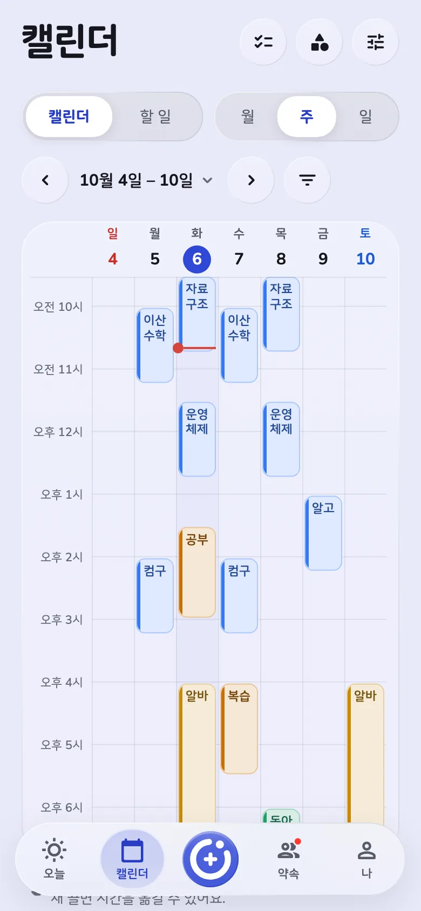
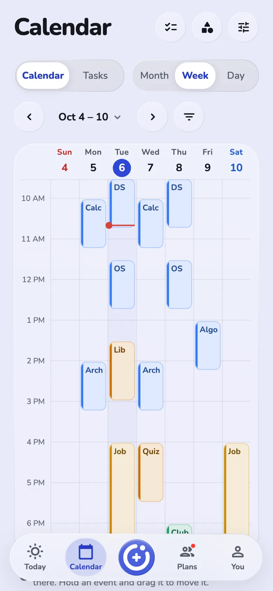
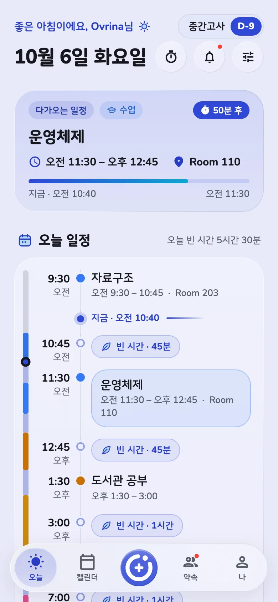
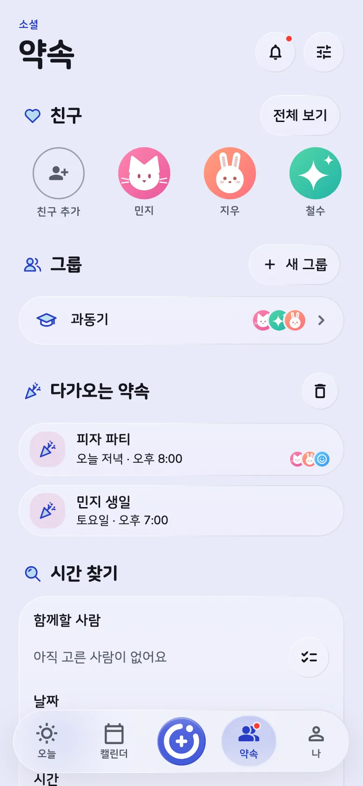
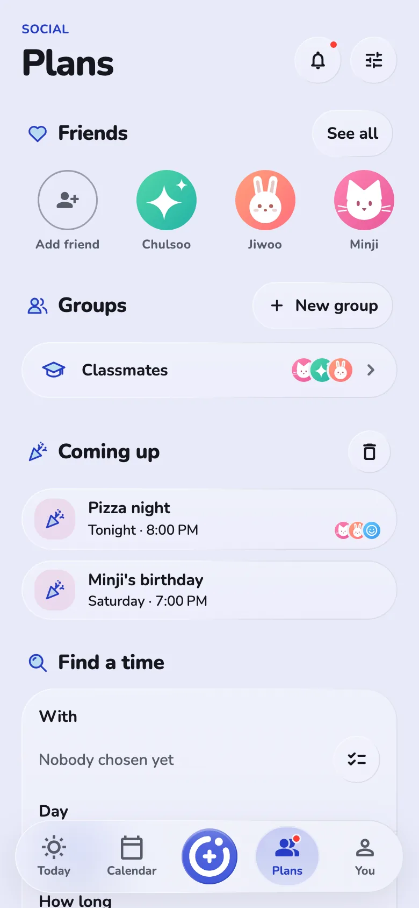

Ovrina — 학생용 소셜 플래너— a social planner for students
2026.09 — 진행 중Sep 2026 — ongoing





- 출시됨Live
- 혼자 — 기획 · 디자인 · 개발 · 운영Solo — product, design, code, ops
- Flutter
- Supabase
- iOS · Android · Web
약속을 잡으려면 단톡방에서 “언제 돼?”를 몇 번씩 묻게 됩니다. Ovrina는 친구를 고르면 모두 비는 시간을 보여 주고, 그 자리에서 약속을 만듭니다. 내 일정은 기본 비공개라 친구에게는 ‘바쁨’만 보이고, 이 규칙은 앱이 아니라 데이터베이스에서 지킵니다.
Making plans means asking “when are you free?” in the group chat again and again. Ovrina shows when everyone is free and lets you make the plan right there. Your events are private by default — friends see only “busy” — and that rule is enforced in the database, not the app.
출시한 지 2주라 사용자는 아직 적습니다. 1.1에 맞춰 알리기 시작했습니다.
Two weeks after launch, users are still few. I started promoting it with 1.1.
결정 · 구조 · 테스트까지 보기Decisions, architecture and tests막대 하나가 하루입니다. 높을수록 그날 커밋이 많았습니다. 9월 21일 첫 커밋부터 11월 19일까지.Each bar is one day; taller means more commits that day. From the first commit on Sep 21 to Nov 19.
주별 표로 보기Show week by week
| 주 (월요일)Week of | 작업한 날Days | 커밋Commits | 그 주의 일Notes |
|---|
9월 21일 첫 커밋부터 11월 5일 출시까지의 날 수입니다. 하루하루는 위 그래프에 있습니다.
Calendar days from the first commit on Sep 21 to the launch on Nov 5. Each day is in the chart above.
Flutter 코드 하나로 iOS 앱, Android 앱, 웹을 만듭니다. 웹은 Cloudflare에 올립니다.
One Flutter codebase builds the iOS app, the Android app and the web app. The web build is hosted on Cloudflare.
Ovrina 저장소 test/ 폴더에서 이름이 _test.dart로 끝나는 파일 수입니다. 지금은 로컬에서 flutter test로 돌립니다.
The number of files ending in _test.dart in the repository’s test/ folder, run locally with flutter test.
supabase/migrations 폴더의 파일 수입니다. 데이터베이스 스키마는 이 파일로만 바꿉니다.
Files in supabase/migrations. The database schema changes only through these.
숫자는 Ovrina 저장소에서 직접 센 값입니다 · 2026-11-19 기준 · 카드를 누르면 세는 방법이 보입니다Counted from Ovrina’s repository · as of 2026-11-19 · tap a card to see how